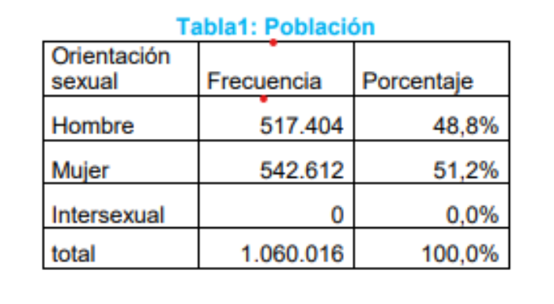
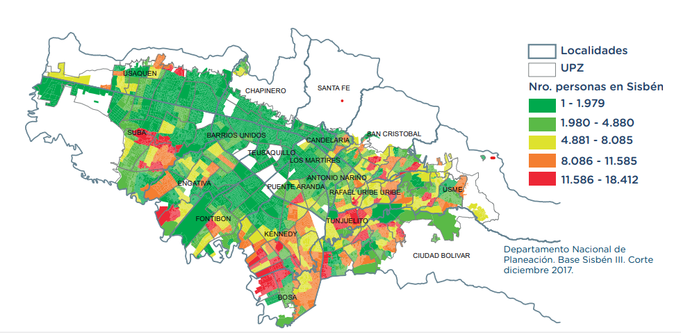

.
La finalidad de nuestro producto de seguros de vida para menores de edad centrada en menores de edad de la localidad de kennedy y sus alrededores el porcentaje de que tomen nuestro servicio es de 46.6% sobre 100 ya que los menores de edad se dividen sobre 12 localidades según la upz (Unidad de planeamiento zonal) en si no piensan de que tomar una aseguradora es muy poca ya que no piensan en su futuro y nuestro plan es concientizar a los jóvenes de que aseguren sus vidas y sus finanzas con nuestra aseguradora
La localidad de kennedy se divide en 12 localidades de las cuales total de habitantes de la localidad de Kennedy será de 1.060.016, de estos el (48,8%) son hombres y (51,2%) son mujeres. No se registran personas intersexuales.
Según cálculos de la Ficha de caracterización socioeconómica del Sistema de identificación de potenciales beneficiarios de programas sociales, Sisbén, hay un total de 937.661 personas en un rango de alta vulnerabilidad en Bogotá (con un puntaje entre 0 y 30,56). Para la localidad de Kennedy este grupo es de 117.332 personas, es decir, el 13% de la ciudad, y el 9,7% de la población total de la localidad.
Las personas de kennedy puede ser clientes buenos ya que sus necesidades y su población cumplen mas o menos con unos requisitos de los cuales nuestra empresa ofrece y de que se aseguraran sus finanzas con nuestra aseguradora para un mejor bienestar en un futuro.